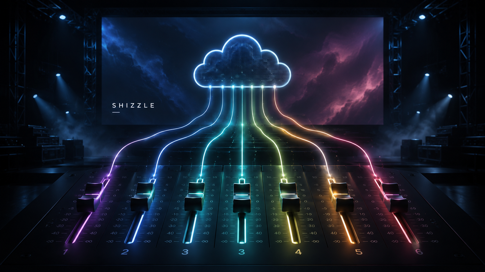
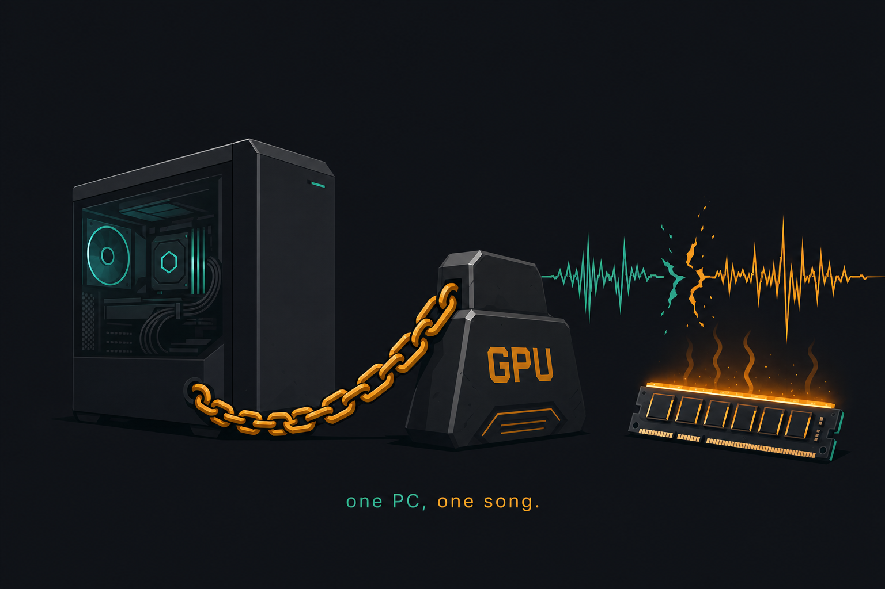
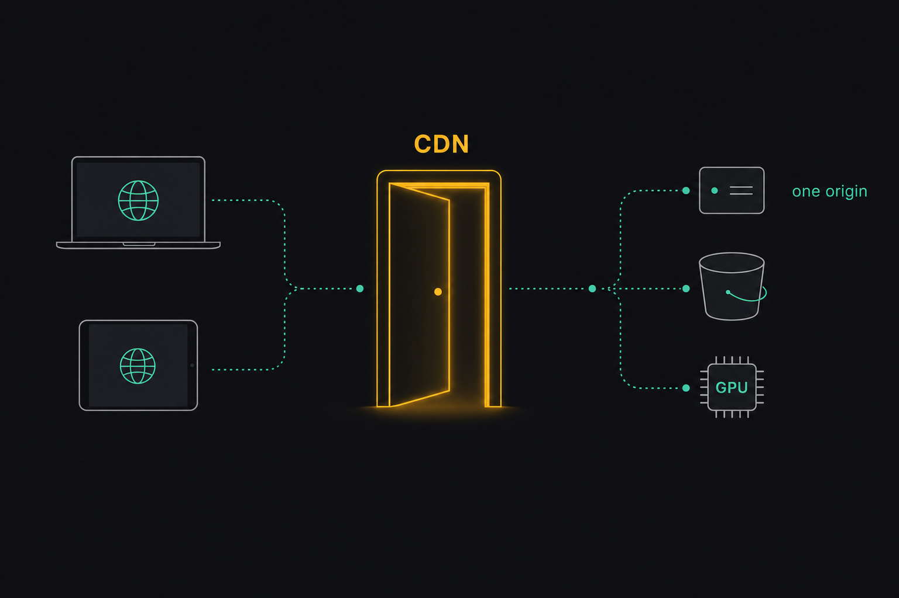
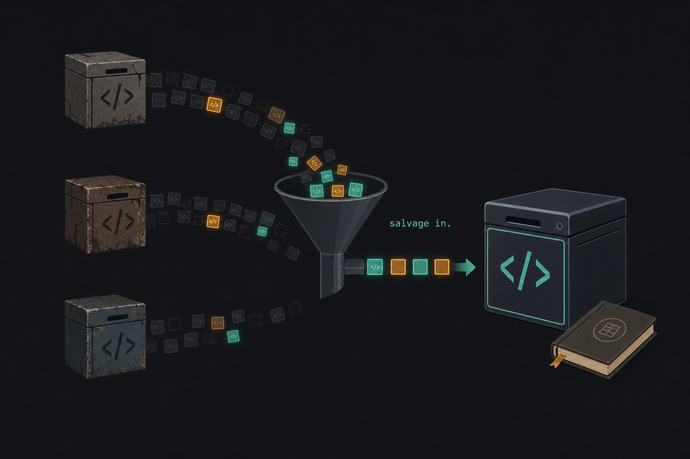
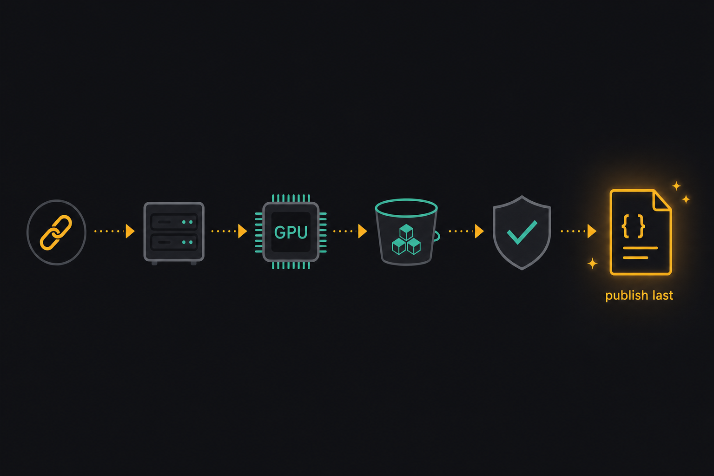
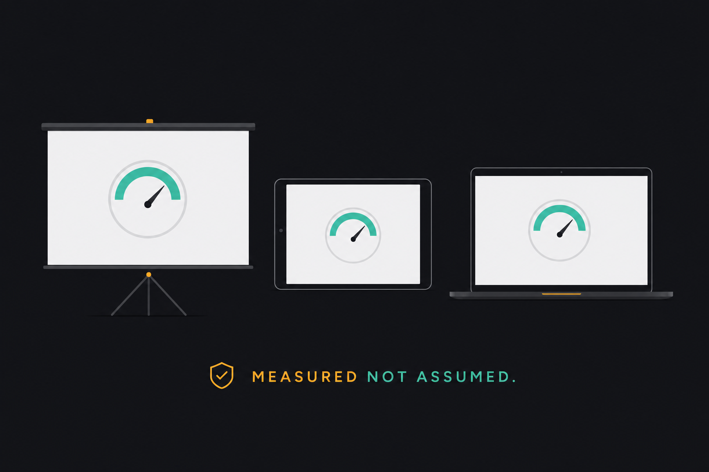
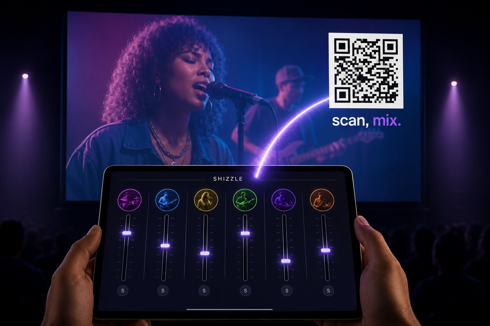
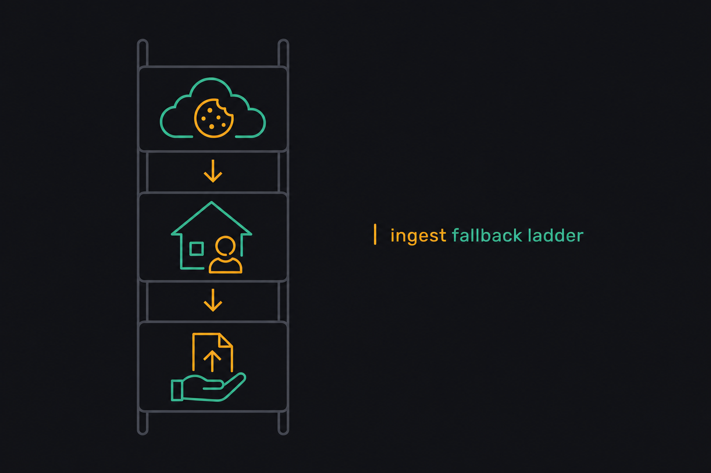
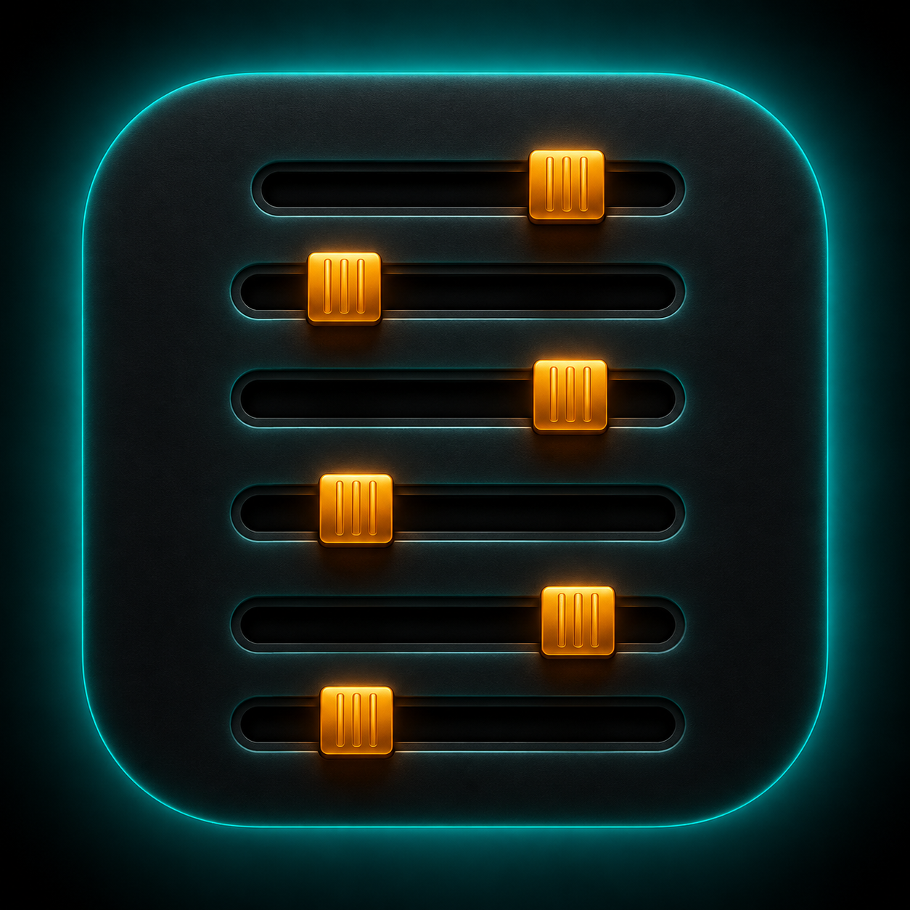

Plan: Shizzle — Cloud Karaoke Stem Mixer

Purpose
Build the all-cloud version of the k25 karaoke stem mixer: paste a YouTube URL, a serverless GPU splits the song into six stems, S3 + CloudFront serve it anywhere, any browser plays the video with live per-stem faders, and an iPad pairs by QR code as a pure touch mixing surface. Private tool for Mike and a couple of musician friends. Done means: from any location, URL → minutes later the song plays on the projector while stems are mixed live from an iPad, sounding as good and staying as tight as the best local prototype.
Problem
Three prior repos hold one working local MVP (nextgen-rewrite is the only committed baseline) plus an abandoned cloud pipeline in an archive. The local tool works but is chained to one PC with a 4070. Prior cloud/heavy attempts failed on: full-file Opus decoding blowing up RAM (one song max), terrible mouse-driven mixing UX, and sync bugs ("broken record" hard-seek loops). An external review (review-01.md) added five hard constraints: six media elements do not share a timeline (sync must be measured, not assumed), CloudFront signed cookies don't flow cross-origin with the current player code, media processing belongs on the GPU worker not the 2-vCPU VPS, job state needs a durable orchestrator not just persisted statuses, and Demucs --clip-mode rescale can poison a unity-sum null test.

Solution
A modular monolith on one small VPS (API + durable Postgres-backed orchestrator), one disposable RunPod GPU worker (modernized from k25/archive/runpod/) that does all heavy media where the files are, immutable artifacts on private S3 served through a single same-origin CloudFront hostname (assets, media, API, WebSocket), a streaming six-stem player behind a PlaybackEngine interface with real skew instrumentation, and a QR-paired controls-only remote page. Risk spikes run first: prove projector/iPad playback, signed-cookie media, Demucs gain behavior, and AAC bitrate by ear — before building the cloud machinery around them.

Relevant Files
Existing Files (salvage sources — copied in, never git-merged)
- existing
X:\GitHub\shizzle\docs\superpowers\specs\2026-08-02-shizzle-cloud-karaoke-design.md— approved design spec v2; the authority this plan implements - existing
X:\GitHub\shizzle\review-01.md— external review; its five critical items are folded into phases 0–6 - existing
X:\GitHub\k25-nextgen-rewrite\local-server\src\local_server\processing.py— tuned ffmpeg/Demucs pure functions; basis of the worker's media stages - existing
X:\GitHub\k25-nextgen-rewrite\local-server\src\local_server\routes.py— upload safety (chunked cap, ffprobe gate, traversal guard); basis of server ingest endpoints - existing
X:\GitHub\k25-nextgen-rewrite\ui\— React 19/Vite/Tailwind player, mixer, library, upload stepper; trunk of the newui/ - existing
X:\GitHub\k25-nextgen-rewrite\ui\src\hooks\useAudioSync.ts— tiered drift policy + stall detection; ported into the media-element engine - existing
X:\GitHub\k25-nextgen-rewrite\docs\global-stem-playback-spec.md— manifest v2 / drift / CDN blueprint; segment-scheduler contingency source - existing
X:\GitHub\k25\ui\src\components\mixer\MixerDrawer.tsx+useStore.ts(uncommitted working tree) — mute/solo buttons, −60…+12 dB range; cherry-picked by hand - existing
X:\GitHub\k25\archive\runpod\(handler.py, audio_processing.py, s3_ops.py, manifest.py, callbacks.py, Dockerfile) — proven S3-in → Demucs → mux → S3-out worker; foundation ofworker/ - existing
X:\GitHub\k25\archive\agent\src\karaoke_agent\s3_multipart.py— tested resumable multipart uploader - existing
X:\GitHub\k25\archive\agent\utils\circuit_breaker.py— tested CLOSED/OPEN/HALF_OPEN breaker for RunPod calls - existing
X:\GitHub\k25\archive\agent\pyproject.toml— ruff + mypy-strict + pytest config; quality baseline for all Python packages - existing
X:\GitHub\k25\archive\docs\aws\s3-naming-spec.md,cloudfront.md— S3 layout + CDN security posture references - existing
X:\GitHub\k25\data\(6 processed tracks) — ready-made fixture stems for Phase 0 skew spike
New Files (target monorepo layout)
- new
spikes/skew-probe/index.html+probe.ts— instrumented 6-stem playback page; per-stem skew logger - new
spikes/signed-cookie-proof/— minimal CloudFront + private S3 + cookie-issuing endpoint proof - new
spikes/demucs-gain/run.py— clip-mode/float/common-gain null-behavior experiment - new
spikes/aac-abx/make_renditions.py— 256k/320k/ALAC renditions for blinded listening - new
spikes/RESULTS.md— recorded gate outcomes; forward-referenced by later phases - new
server/src/shizzle_server/main.py— FastAPI app factory (evolved from nextgen main.py) - new
server/src/shizzle_server/api/routes.py— auth, ingest, jobs, library, tracks endpoints (DB-backed) - new
server/src/shizzle_server/auth.py— passcode → hashed opaque tokens, auth-version, signed-cookie issuance - new
server/src/shizzle_server/db/models.py+alembic/— jobs, job_events, tracks schema + migrations - new
server/src/shizzle_server/orchestrator/loop.py— durable lease-based job loop (separate process) - new
server/src/shizzle_server/orchestrator/runpod_client.py— dispatch, webhook receiver, polling reconciler, circuit breaker - new
server/src/shizzle_server/ingest/ytdlp.py— cookie-authed download, YouTube-domain validation - new
server/src/shizzle_server/publish.py— checksum verification, manifest-last publication, immutable generations - new
server/src/shizzle_server/ws/sessions.py— pairing sessions, envelope protocol, revision-stamped state relay - new
worker/handler.py+audio_processing.py+integrity.py+encode.py+Dockerfile— modernized RunPod worker (float-preserving Demucs, common gain, dual residual checks, AAC knob, optional multi-track.mp4, staging uploads) - new
ui/src/lib/playback/PlaybackEngine.ts— engine interface (load, play, pause, seek, setStemGainDb, metrics) - new
ui/src/lib/playback/mediaElementEngine.ts— salvaged six-element approach + drift policy + instrumentation, behind the interface - new
ui/src/lib/playback/metrics.ts— per-stem skew, buffer state, correction counters (never average-only) - new
ui/src/remote/RemotePage.tsx— controls-only touch surface (faders, mute/solo, master, transport, library) - new
infra/compose.yml— api, orchestrator, postgres, caddy (+ local-gpu profile for dev) - new
infra/cloudfront/— distribution config as code (origins, behaviors, OAC, WebSocket forwarding, lifecycle rules) - new
docs/provenance.md— per-unit salvage ledger: source repo, commit, path, changes, tests - new
fixtures/golden-30s.mp4— small rights-safe test clip bundled for CI and e2e
Implementation Phases
IMPORTANT: Execute every phase and task step by step, in order, top to bottom.
Status markers: [] idle · [wip] in progress · [x] complete · [f] failed. All start as []; the Build Plan workflow updates them as it works.
[] Phase 0: Risk Spikes — prove the hard assumptions first
Cheap, isolated experiments that decide the design's riskiest bets before structural work. Every spike writes its outcome (numbers, verdict, decision) to spikes/RESULTS.md. Blocked-on-credentials spikes (0.2) may run concurrently with Phase 1 but must complete before Phase 3.
0.1 Stem-skew playback probe (decides PlaybackEngine path)
[]Buildspikes/skew-probe/: static page loading a full processed track fromX:\GitHub\k25\data\(video + 6 m4a) via six<audio>+ gain nodes[]Instrument: sample every 250 ms — each stem'scurrentTimedelta vs video (min/max/per-stem, never average-only),readyState/stalled flags, correction events; dump JSON report on song end[]Run a full song on: Chromium laptop (HDMI reference), iPad Safari, Samsung projector Tizen browser[]Record verdict inspikes/RESULTS.md: max skew per device vs 50 ms threshold; Tizen supported/opportunistic/unsupported; segment-scheduler contingency triggered or not
0.2 Signed-cookie media proof (needs fresh AWS creds)
[]Audit surviving infra first:aws s3 ls s3://karaoke-pimpshizzle, RunPod dashboard check — inventory anything reusable intospikes/RESULTS.md[]Stand up minimal proof: private S3 + OAC + one CloudFront distro with/media/*and a stub/api/cookieorigin issuing signed cookies[]Prove: same-origin<audio>streams a stem with Range requests through signed cookies on Chromium + iPad Safari
0.3 Demucs gain/null behavior
[]spikes/demucs-gain/run.py: split the golden track twice on the 4070 — current flags vs float-preserving output (no per-stem rescale), measure unity-sum RMS/peak residual for both[]Decide and record: gain policy (float or common attenuation factor), acceptable residual thresholds for the two integrity gates
0.4 Blinded AAC bitrate comparison
[]spikes/aac-abx/make_renditions.py: from one golden track's float stems, produce 256k AAC / 320k AAC / ALAC remixes, randomized filenames + answer key[]Mike listens blind on the real rig (projector + main speakers); record chosen default bitrate inspikes/RESULTS.md
0.5 Testing Strategy
The spikes are the tests — each produces a measured artifact, not an opinion. Validation is the existence and completeness of recorded results.
[]type spikes\RESULTS.md— contains a filled verdict block for each of 0.1–0.4 (skew table per device, cookie proof pass/fail, residual numbers + thresholds, chosen bitrate)
[] Phase 1: Repo Assembly + Local Golden Pipeline
Fresh monorepo, salvage copied in with provenance, strict tooling from day one, and the local pipeline running on the 4070 as the reference implementation. No cloud dependencies yet.

1.1 Scaffold and tooling
[]Create monorepo layout:server/,worker/,ui/,infra/,spikes/,fixtures/,docs/; root README[]Python: uv workspaces forserver/andworker/; copy ruff + mypy-strict + pytest config fromarchive/agent/pyproject.tomlinto both[]UI: copy nextgenui/wholesale; keep ESLint flat config + knip; wirenpm run lint && npm run typecheck && npm run knipas onecheckscript[].gitignorefrom nextgen (data/, media, env) — never from k25[]Createfixtures/golden-30s.mp4: 30 s rights-safe clip (generate tones+video with ffmpeg) for CI; full-length personal golden track stays local-only, path via env var
1.2 Salvage copy-in with provenance
[]Copy server trunk from nextgenlocal-server/→server/, renamedshizzle_server; delete stale docs, dead env files, orphan configs listed in the spec's "not carried" table[]Copyarchive/runpod/→worker/;s3_multipart.py+circuit_breaker.py(with their tests) →server/src/shizzle_server/lib/[]Hand-port mute/solo + −60…+12 dB from k25's uncommittedMixerDrawer.tsx/useStore.ts[]Writedocs/provenance.md: one row per salvaged unit — source repo, commit or "uncommitted working tree 2026-08-02", path, intentional changes, tests carried
1.3 Contract and audio-graph corrections (spec §5)
[]Renamedefault_gain→default_gain_dbin manifest writer, Pydantic models, TS types; apply viadbToLinear()at load (kills the latent 0-dB-is-silence bug)[]ExtractPlaybackEngine.tsinterface; move salvaged StemAudioManager + drift policy behind it asmediaElementEngine.ts; addmetrics.tsinstrumentation from spike 0.1[]Add master gain bus + conservative limiter node + clip indicator; wire the (previously dead) volume slider through it; delete dead code (syncToTime,bufferingflag) — knip must pass
1.4 Local golden-track run
[]infra/compose.ymllocal profile: the nextgen GPU container + Vite dev server (docker compose, 4070)[]Process the golden clip end-to-end locally; play it in the browser with mute/solo, master bus, and instrumentation overlay working
1.5 Testing Strategy
Deterministic unit tests for pure logic (pytest + vitest); real ffmpeg integration on the bundled fixture; lint/type/dead-code gates enforced from the first commit.
[]uv run --directory server ruff check . ; uv run --directory server mypy .— Python quality baseline holds[]uv run --directory server pytest -q— salvaged lib tests (multipart, breaker) + new manifest/drift-math units pass[]npm --prefix ui run check— ESLint + tsc + knip all clean (dead code gone)[]docker compose --profile local upthen process + playfixtures/golden-30s.mp4— local reference pipeline works on the 4070
[] Phase 2: Job Model + Durable Orchestrator
Replace the in-memory dict with Postgres and a restart-safe orchestrator process. Pure control-plane work — testable entirely locally with fault injection, no cloud accounts needed.
2.1 Schema and models
[]Alembic migration:jobs(id, source, status, runpod_job_id, attempt, idempotency_key, lease_owner, lease_expires_at, next_retry_at, profile_version, input_checksum, output_checksums, error_code, timings), append-onlyjob_events,tracks(id, title, duration, s3_prefix, generation, manifest_key, integrity results)[]SQLAlchemy models + typed repository layer; structured error codes enum (YTDLP_BLOCKED,DEMUCS_FAILED,S3_UPLOAD_FAILED, …)
2.2 Orchestrator process
[]orchestrator/loop.py: lease-claim loop (SELECT … FOR UPDATE SKIP LOCKED), stage execution, retry with backoff vianext_retry_at, idempotent stage handlers, lease expiry recovery[]Compose gets 4 services:api,orchestrator,postgres,caddy; orchestrator restarts resume cleanly
2.3 API on the database
[]Rewrite endpoints on DB: submit URL/upload → job row; job status (+ SSE or poll); library fromtracks; manual delete; job-history listing[]Carry over upload safety verbatim (chunked cap, ffprobe gate, traversal guard) — provenance row updated
2.4 Testing Strategy
Contract + fault-injection tests (Mike's rule: fault injection only where reality can't be provoked on demand — restarts and duplicates qualify). Real Postgres via compose, no mocked DB.
[]uv run --directory server pytest tests/orchestrator -q— kill-and-restart mid-stage resumes the job exactly once (idempotency); expired lease is reclaimed; duplicate completion event is a no-op; retry schedule honored[]docker compose up -d ; docker compose restart orchestrator— in-flight fixture job completes after restart;job_eventsshows an unbroken history
[] Phase 3: RunPod Worker + S3 Staging/Publish Contract
The cloud pipeline: modernized GPU worker owns all heavy media; VPS orchestrates, verifies, and publishes. Requires fresh AWS + RunPod credentials and the spike 0.2/0.3 results.

3.1 Modernize the worker
[]Updateworker/from archive: htdemucs_6s + tuned flags from nextgenprocessing.py; gain policy + thresholds from spike 0.3 (float-preserving, one common gain, never per-stem normalization)[]integrity.py: PCM reconstruction residual (pre-encode) + decoded-AAC residual (post-encode); sample count, offset, RMS, peak, profile version — recorded into the staging manifest[]encode.py: AAC bitrate knob (default from spike 0.4); browser-safe H.264 video re-encode; optionalmulti-track.mp4behind the existing config flag[]Staging uploads with checksums totracks/{track_id}/{generation}/staging/via salvaged multipart uploader; new CUDA base image; local smoke run of the container on the 4070 before any RunPod deploy
3.2 RunPod integration
[]Create/verify serverless endpoint pinned to 1 worker / 1 concurrent job (defaults are higher); reuse surviving endpoint if the 0.2 audit found one[]runpod_client.py: dispatch with idempotency key; webhook receiver (fast path) + polling reconciler (recovery path — RunPod retains results only ~30 min, retries webhooks only twice); circuit breaker wrapped
3.3 Ingest
[]ingest/ytdlp.py: YouTube-domain-validated URLs only, browser-cookie auth, structuredYTDLP_BLOCKEDfailure; direct upload path reuses Phase 2 endpoint[]Empirically test yt-dlp from the VPS IP; record the working tier (cookies / home-helper needed / upload-only) inspikes/RESULTS.md
3.4 Publisher
[]publish.py: verify staged sizes/checksums against worker report; promote staging →tracks/{track_id}/{generation}/; write immutable manifest last; flip track ready in DB[]S3 lifecycle rules as code: expire staging prefixes, failed attempts,AbortIncompleteMultipartUpload
3.5 Testing Strategy
Real-boundary smoke tests against actual AWS + RunPod (small fixture = cheap GPU seconds); fault injection for the webhook/reconciler seams.
[]uv run --directory worker pytest -q— integrity math units + handler contract tests pass[]uv run --directory server pytest tests/runpod_contract -q— duplicate webhook, late webhook after reconciler, missing result (>30 min) all converge to correct terminal state[]End-to-end: submit a YouTube URL on the VPS → track published with both integrity residuals within spike-0.3 thresholds; verify manifest is the last object written
[] Phase 4: Same-Origin CloudFront + Auth
One public hostname for everything; passcode auth with revocable tokens and signed-cookie media. Production deploy to the Hostinger KVM 2.
4.1 Distribution as code
[]infra/cloudfront/: behaviors/assets/*→ UI bucket (OAC),/media/*→ private media bucket (OAC + signed cookies),/api/*+/ws/*→ VPS origin with WebSocket upgrade forwarding; growing from the spike-0.2 proof distro[]UI build deployed to the assets bucket; player fetches manifest + media by same-origin relative paths (no VITE_ base URLs)
4.2 Auth
[]auth.py: passcode (rate-limited) → hashed opaque device token with expiry + auth-version; every request checks version — rotating the passcode bumps the version and revokes all tokens[]Token-gated signed-cookie issuance for/media/*; cookie refresh before expiry during long sessions
4.3 Production deploy
[]Hostinger KVM 2 provisioned (Mike); compose production profile up (api, orchestrator, postgres, caddy); Caddy TLS at origin; CloudFront in front
4.4 Testing Strategy
Real-network proof from outside the LAN — the whole point of the cloud build.
[]From a remote network (phone hotspot): passcode login → full-song playback streams via CDN with Range requests; no CORS errors in console[]Rotate passcode → previously-authed device is rejected on next request; media cookies stop being issued[]curl -I https://<host>/media/<stem>without cookies — 403 (bucket never public)
[] Phase 5: Playback Hardening + Device Matrix
The media-element engine proves itself (or triggers the contingency) on real hardware, over the real CDN.

5.1 Engine instrumentation in production
[]Metrics overlay (dev toggle): per-stem skew, buffer/stall states, correction + underrun counters; session summary exportable[]Drift thresholds + stall bailout confirmed against CDN latency (not just LAN)
5.2 Device acceptance matrix
[]Full-song runs: Chromium-over-HDMI (reference), iPad Safari, projector Tizen (opportunistic); record matrix in docs[]Mix-bus verification: six stems at +12 dB — limiter engages, clip indicator lights, no audible breakup
5.3 Contingency (only if matrix fails thresholds)
[]Implement aligned segment scheduler perglobal-stem-playback-spec.md(decode + schedule againstAudioContext.currentTime) behind the samePlaybackEngineinterface; re-run matrix
5.4 Testing Strategy
Acceptance is empirical: full songs on real devices with recorded metrics.
[]npm --prefix ui run test:e2e— Playwright on bundled fixture: load, play to end, zero hard-seeks steady-state, master/mute/solo effective (asserted via engine metrics API)[]Matrix doc updated: every device row has skew numbers and a pass/opportunistic/fail verdict — no blank rows
[] Phase 6: Remote Surface (QR pairing)
The iPad becomes the mixing desk: revisioned WebSocket protocol, session-scoped QR credentials, controls-only page.

6.1 Session protocol
[]ws/sessions.py: player registers → session + high-entropy short-lived code; envelope on every message (version,clientId,commandId) and server-assignedrevisionon state broadcasts; snapshots on join/reconnect[]QR code exchanges for a WebSocket-only credential — no library/API access; codes expire, sessions die with the player
6.2 Remote page
[]RemotePage.tsx: six touch faders (mute/solo, −60…+12 dB), master fader + clip indicator mirror, transport, library picker; fader messages coalesced to 20–30/s[]Player applies intents to the engine and broadcasts authoritative state; on-screen mixer drawer and all remotes mirror live (mouse fallback retained)
6.3 Testing Strategy
Deterministic protocol tests for ordering/reconnect; a real two-controller session as acceptance.
[]uv run --directory server pytest tests/ws -q— out-of-order commandIds resolved by revision; reconnect gets a correct snapshot; expired code rejected; scope of QR credential enforced[]npm --prefix ui run test:e2e -- remote— Playwright two-context test: remote fader move changes player gain; player state mirrors back[]Party test on real hardware: projector plays, two phones/iPad mix simultaneously without fighting — logged in the matrix doc
[] Phase 7: Operations + Polish
Make it boring to own: backups, health, metrics, cost truth — then the conveniences.
7.1 Operations
[]Nightly Postgres dump to S3 (lifecycle-managed); restore drill documented and executed once[]Health endpoints for api/orchestrator; uptime check; minimal metrics (jobs by status, GPU seconds, storage GB) on a status page[]One-month cost check against the spec's $12–20 estimate; record actuals
7.2 Polish
[]YouTube search via Data API key (title/thumbnail/duration → one-tap submit)[]Job-history page with structured error codes; library management (rename, delete with confirmation)[]README + runbook (deploy, rotate passcode, restore backup, add a device)
7.3 Testing Strategy
Operational proof over unit tests here: drills and checks.
[]Restore drill: fresh Postgres from last backup → library intact, jobs history intact[]curl https://<host>/api/health— api + orchestrator + DB all green
Validation Commands
Execute these commands to validate the entire plan is complete:
[]uv run --directory server ruff check . && uv run --directory server mypy . && uv run --directory server pytest -q— server quality gates + full test suite[]uv run --directory worker pytest -q— worker integrity + contract tests[]npm --prefix ui run check && npm --prefix ui run test && npm --prefix ui run test:e2e— UI lint/type/dead-code + unit + e2e on bundled fixture[]Live e2e: YouTube URL submitted from a remote network → published track with in-threshold integrity residuals → full-song CDN playback on the device matrix[]Party test: projector + two touch controllers, full song, no fighting, no audible artifacts[]type spikes\RESULTS.md && type docs\provenance.md— every spike verdict recorded; every salvaged unit has a provenance row
Notes
Decisions already made (do not re-litigate)
| Decision | Origin |
|---|---|
| All-cloud; AWS + VPS + RunPod kept; no n8n; database required | Mike, 2026-08-02 |
| Personal tool — Mike + a few musician friends; shared passcode, no accounts | Mike, 2026-08-02 |
| iPad/phone = controls-only page; big screen = video; latency on controls acceptable | Mike, 2026-08-02 |
| "It's got to sound good" — quality gates + blinded bitrate choice are requirements, not polish | Mike, 2026-08-02 |
| Hostinger KVM 2 (2 vCPU / 8 GB / 100 GB), US region | Mike, 2026-08-02 (agent sizing, Mike confirmed intent) |
| nextgen-rewrite = trunk; copy files, never merge 3.5 GB histories | Agent default from exploration, unchallenged |
multi-track.mp4 kept (reviewer wanted deferral) | Agent, pending Mike's veto — it's his archival format |
Rejected approaches
- Resurrect n8n/Supabase-queue distributed pipeline — five services to babysit for a hobby tool; Mike explicitly walked away from it.
- 24/7 GPU box — pays GPU rates for idle; RunPod serverless splits a few songs a week for ~$1–2/mo.
- Server-side live mixing — fader round-trips through a render server would feel laggy; mixing stays client-side where it's cheap.
- Thin RunPod wrapper around VPS-side ffmpeg — review item 3 killed it: double transfers, 2-vCPU box as media worker, and the archive already contains a proven full worker.
Dependencies to add
server/:uv add sqlalchemy alembic asyncpg yt-dlp boto3 itsdangerous(signed values),uv add --dev pytest-asyncioworker/: pinned in Dockerfile — torch cu121, demucs, soundfile, numpy<2, boto3, runpod SDKui/:qrcode(or a ~1 kB QR component); no other additions — keep the hand-rolled primitives
Credentials checklist (blocking marked phases)
| Credential | Needed by | Status |
|---|---|---|
| Fresh AWS keys (S3, CloudFront, IAM-for-OAC) | Phase 0.2 | ❌ current CLI creds dead (verified 2026-08-02) |
| RunPod API key + dashboard audit | Phase 3 | ❓ possible surviving endpoint |
| Hostinger KVM 2 SSH | Phase 4 | ⏳ Mike spinning up |
| YouTube browser cookies export | Phase 3.3 | ⏳ |
| YouTube Data API key (search only — cannot download) | Phase 7.2 | ✅ Mike has one |
Known risk ladder for YouTube ingest
Tier 1: yt-dlp + cookies from the VPS (test empirically in 3.3). Tier 2: tiny home-helper on the PC that downloads and hands the file to the VPS. Tier 3: manual upload — works from day one because the upload path ships in Phase 2. The pipeline is source-agnostic past "video in staging," so tiers can change without touching anything downstream.
Old-infrastructure audit (first cloud action)
The archived worker names bucket karaoke-pimpshizzle. Before creating any new resources: inventory that bucket (possible pre-split library to inherit) and the RunPod dashboard (possible reusable endpoint + container config). Record findings in spikes/RESULTS.md; reuse where sane.

Branding
App icon candidate (Mike, ChatGPT) — target favicon / iPad home-screen icon when the UI ships. Alternate API renders for the hero and phase-6 slots are kept in the images folder (hero.png, phase6.png).
